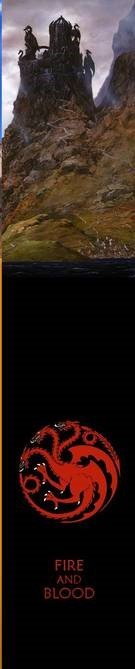
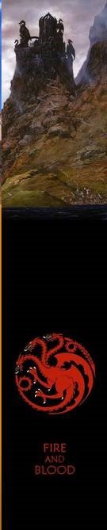

A série se inicia quando Ned Stark, senhor de Winterfell e protetor do Norte, é convidado para se tornar o principal conselheiro (conhecido como o Mão do Rei) do Rei Robert Baratheon dos Sete Reinos de Westeros. Ned, em segredo, recebe uma carta de Lysa, irmã de sua esposa Catelyn, que lhe dá motivo para acreditar que seus rivais, a Casa Lannister — da qual a esposa do rei, a Rainha Cersei, faz parte — causaram a morte de Jon Arryn, o Mão do Rei anterior. Ned entra na missão de ir para o sul a fim de ajudar o rei a governar como também a descobrir quem matou Jon Arryn. Enquanto isso, além do Mar Estreito, o príncipe exilado Viserys Targaryen arranja um casamento para sua irmã Daenerys com Khal Drogo, em troca do exército de Drogo para tomar o Trono de Ferro que é seu por direito.

Os Sete Reinos entram em guerra, com o autoproclamado Rei do Norte, Robb Stark, lutando a fim de ganhar a independência para seu povo e para o povo das Terras Fluviais. Robb percebe que precisa ganhar a fidelidade do povo independente das Ilhas de Ferro, e envia seu melhor amigo Theon Greyjoy para conversar com seu pai, Balon Greyjoy, que está armando planos para seu próprio benefício. Enquanto isso, o príncipe Joffrey Baratheon assume o Trono de Ferro com o apoio da poderosa Casa Lannister, porém, seus tios, Renly e Stannis Baratheon, entram em disputa para tomar o trono. Assim como Renly e Stannis, a princesa Daenerys agora com três dragões jovens, segue o plano de Viserys em busca de aliados para reivindicar também o Trono de Ferro. Enquanto todos disputam pelo governo absoluto de Westeros, Tyrion Lannister chega em Porto Real para se tornar conselheiro do rei, mas acaba enfrentando a oposição de sua intrigante irmã, Cersei, que em segredo, é a verdadeira conselheira de seu filho Joffrey.

Os Sete Reinos permanecem presos pela guerra civil. O autoproclamado Rei Renly Baratheon é assassinado, o que altera as alianças na guerra, principalmente para a Casa Stark que fica em desvantagem após Theon Greyjoy tomar posse de Winterfell. Robb Stark, traído por seu amigo Theon, decide portanto marchar e reconquistar o Norte, mas acaba caindo em uma armadilha arquitetada por Tywin Lannister, pai da Rainha Cersei. O cruel Rei Joffrey Baratheon também conquista uma grande vitória ao garantir uma aliança com a Casa Tyrell, após derrotar seu tio Stannis. Agora, Joffrey comanda os maiores exércitos do reino e seu triunfo parece ser inevitável. Enquanto isso, no outro lado do Mar Estreito, Daenerys autoproclama-se rainha e adquire um grande exército de soldados chamados de Imaculados para ajudá-la a conquistar Westeros.
Enquanto a Casa Stark está à beira da extinção — ou, pelo menos é o que o reino em geral acredita —, quatro filhos de Ned lutam para sobreviver. Sansa Stark continua sendo refém do Trono de Ferro e é forçada a se casar com Tyrion; enquanto Rickon Stark procura a segurança da Última Lareira e da ferozmente leal Casa Umber. Bran Stark e seus companheiros, Hodor, Jojen e Meera Reed, atravessam a Muralha perseguindo uma visão; enquanto Arya Stark, que perdeu tudo, foge para o continente de Essos a fim de voltar para se vingar. A Casa Lannister e a Casa Tyrell decidem se tornar invencíveis através do casamento entre Rei Joffrey e Margaery Tyrell, mas nem tudo sai como o esperado para os Lannisters e Joffrey sofre consequências. Daenerys abole a escravidão em Essos, mas seus dragões lhe causam grandes problemas fazendo-a tomar decisões difíceis.

A Guerra dos Cinco Reis, que se acreditava estar chegando ao fim, entra em uma nova e mais caótica fase. Daenerys Targaryen torna-se cada vez mais poderosa e sua fama não passa despercebida por ninguém em Westeros. Tyrion Lannister foge para Essos e alia-se com Daenerys após ser traído por sua família. Sansa Stark consegue fugir de Porto Real e é forçada a se casar com o novo usurpador de Winterfell, Ramsay Bolton. Na disputa direta pelo governo, Cersei e a Rainha Margaery disputam para ter influência sobre o novo rei, Tommen Baratheon. Cersei se alia ao sacerdote Alto Pardal para afastar a Casa Tyrell da corte. Jon Snow — filho bastardo de Ned Stark — tem a difícil missão de unir seus companheiros da Patrulha da Noite com os Selvagens — povo nômade que mora para-lá-da-muralha — para enfrentar ameaças vindas do extremo Norte.
No Norte, Sansa Stark e Theon Greyjoy conseguem escapar de Winterfell, que está sob a cruel liderança de Ramsay Bolton. Bran Stark se torna O Corvo de Três Olhos, e como vidente ele tem visões sombrias do passado e futuro de Westeros. Jon Snow ganha o respeito de seus colegas da Patrulha da Noite e consegue uma aliança com os Selvagens, que juntos decidem recuperar Winterfell. Em Porto Real, a Casa Tyrell consegue minar o poder de Cersei Lannister após ela ser traída e humilhada pelo Alto Pardal, porém, a rainha consegue grandes êxitos. Em Essos, a Rainha Daenerys consegue garantir mais combatentes e aliados para sua guerra, enquanto Arya Stark conclui seu treinamento de guerreira e volta para Westeros, dando início a sua vingança.

A tensão sobre quem irá ficar com o Trono de Ferro aumenta. Daenerys finalmente consegue chegar em Westeros, ocupar Pedra do Dragão — ilha ancestral dos Targaryen —, e iniciar os combates iniciais contra os exércitos de Cersei Lannister. Cersei ganha vantagem ao se aliar com o autoproclamado rei das Ilhas de Ferro, Euron Greyjoy, e sua Frota de Ferro. As irmãs Arya e Sansa Stark se reencontram em Winterfell, e precisam superar armadilhas de cunho político para se manter unidas. À procura de um minério que pode ajudar no combate contra os Caminhantes Brancos — criaturas místicas que querem dominar Westeros —, Jon Snow vai ao encontro de Daenerys em Pedra do Dragão. Ela é convencida por Jon sobre as criaturas e chega a conhecer a crueldade do Rei da Noite, que não mede esforços para dominar os Sete Reinos.

O Rei da Noite, ao lado de seu exército de Caminhantes Brancos, atravessam a Muralha e marcham a fim de exterminar todos os humanos. Daenerys chega em Winterfell com seu exército ao lado de Jon, e Cersei recebe os mercenários da Companhia Dourada em Porto Real. Arya e Bran se reencontram com Jon, enquanto Samwell Tarly revela para Jon seu verdadeiro parentesco como herdeiro do trono. O desentendimento entre Daenerys e Jon pela coroa se torna evidente; no entanto, para que possam conquistar o Trono de Ferro, os dois se unem com o objetivo de derrotar o Rei da Noite e, posteriormente, Cersei, e assim decidir o destino dos Sete Reinos.